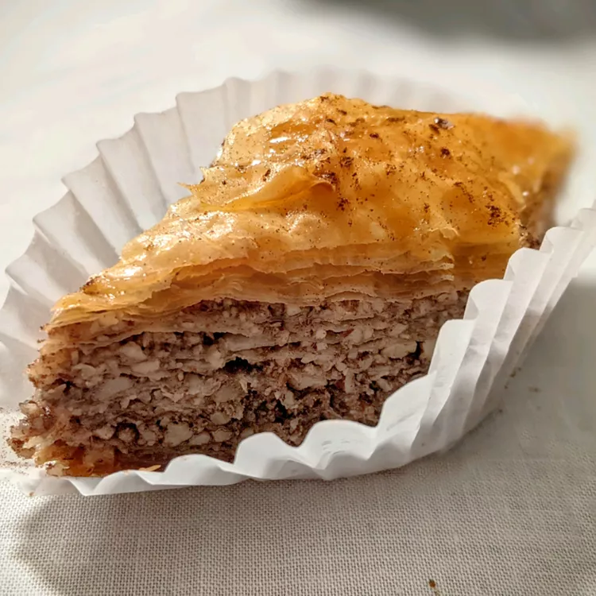

BAKLAVA

DESCRIPTION
Though baklava is often associated with Greek restaurants now, its exact origins are unclear.Food historians think modern baklava may have been invented in Turkey during the Ottoman Empire, then modified in Greece. However, the technique of layering unleavened bread with nuts and honey can be traced back as far as the 8th century B.C.E. during the Assyrian Empire.
Pronounce "baklava" like "bah-klah-vah." The stress is placed on the first syllable.
INGREDIENTS
- Make your own phyllo pastry dough or buy frozen phyllo dough at the store.
- Chopped walnuts, pistachios, or a mixture of both are traditionally used. Hazelnuts and/or pecans would also work.
- Not only does butter add richness and flavor, it keeps the phyllo sheets moist and soft. It also helps the sheets stay together.
- Cinnamon is responsible for baklava's signature warmth.
- A sweet syrup — made from water, sugar, vanilla extract, and honey — is poured over the baked baklava layers, bringing the delicious dessert together.
HOW TO MAKE BAKLAVA
- Even though making baklava can be a bit time-consuming, it's probably not as hard as you think. You'll find the full recipe below, but here's a brief overview of what you can expect
- Stack eight sheets of phyllo dough, brushing with butter between each layer, to create a sturdy base. Sprinkle it with a mixture of chopped nuts and cinnamon. Top with two sheets of phyllo dough and follow with the nut mixture. Repeat this process a few more times, until the nut mixture is gone. Top with about eight more layers of phyllo, buttering each layer.
- Cut the baklava into diamond or square shapes. Be sure to cut all the way to the bottom of the pan. Bake until golden and crisp.
- Boil water and sugar until sugar is melted. Add vanilla and honey. Remove the baklava from the oven and immediately pour syrup over it. Let cool before serving.